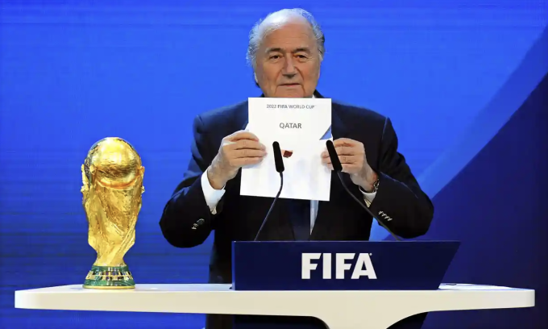

Cựu Chủ tịch FIFA Sepp Blatter thừa nhận Qatar là lựa chọn tồi tệ để đăng cai World Cup.
"Khi đó, Ban chấp hành FIFA đã quyết định chọn World Cup 2018 ở Nga, và 2022 ở Mỹ", Blatter nói trên báo Thuỵ Sĩ Tages-Anzeiger ngày 8/11. "Đây được coi là cử chỉ hoà bình để hai đất nước đối lập chính trị tổ chức World Cup liên tiếp. Để Qatar đăng cai là sai lầm vì đó chỉ là nước nhỏ, còn World Cup nên dành cho những nước lớn".
Tháng 12/2010, Sepp Blatter công bố Qatar thành chủ nhà World Cup 2022. Ảnh: EPA
Ngày 2/12/2010, FIFA công bố World Cup 2018 diễn ra ở Nga, và năm 2022 tại Qatar - đất nước chưa từng dự World Cup trước đó. Ở vòng bỏ phiếu quyết định, Qatar đánh bại Mỹ với tỷ số phiếu 14-8. Blatter nói rằng mấu chốt dẫn đến thành công của Qatar là tác động từ Tổng thống Pháp lúc đó Sarkozy lên Chủ tịch UEFA Michel Platini. "Nhờ bốn phiếu từ Platini và các nước đồng minh tại UEFA, Qatar đã đánh bại Mỹ", ông nói thêm.
Blatter kể rằng Platini đã được mời đến cuộc gặp giữa ông Sarkozy và Thái tử Qatar ở điện Elysee, thủ đô Paris, Pháp. Sau cuộc gặp này, Platini thay đổi quan điểm vì ông được Sarkozy đề nghị bỏ phiếu cho Qatar. Platini nói với Blatter: "Nếu ông rơi vào trường hợp của tôi, liệu ông có làm trái lời Tổng thống?". Blatter đáp: "Tôi là người Thuỵ Sĩ, và nước tôi không có Tổng thống".
Blatter tiết lộ sáu tháng sau cuộc bỏ phiếu, Qatar mua những chiếc máy bay chiến đấu phản lực của Pháp với giá 14,6 tỷ USD. Năm 2011, Quỹ đầu tư thể thao Qatar (QSI) mua lại PSG, giúp đội vô địch Pháp tám lần kể từ đó.
Năm 2019, Platini bị Pháp điều tra về cuộc chạy đua đăng cai World Cup 2022. Cựu cầu thủ đoạt Quả Bóng Vàng 1983, 1984 và 1985 thừa nhận đã gặp gỡ Sarkozy hôm đó, nhưng phủ nhận phiếu bầu của ông cho Qatar có liên quan đến cựu Tổng thống Pháp.
Năm 2013, Platini nói với Guardian: "Tôi biết Sarkozy muốn người Qatar mua PSG. Tôi hiểu Sarkozy muốn ủng hộ Qatar đăng cai World Cup, nhưng ông ấy chưa từng đề nghị tôi làm gì. Tôi luôn làm những gì tốt nhất cho bóng đá, chứ không vì cá nhân tôi hay vì Pháp".
Sarkozy làm Tổng thống Pháp giai đoạn 2007-2012, và ông từ chối bình luận về cuộc chạy đua đăng cai World Cup. Tháng 3/2018, ông bị bắt vì liên quan cáo buộc chiến dịch tranh cử của ông năm 2007.
Blatter làm Chủ tịch FIFA giai đoạn 1998-2015, nhưng đang bị cấm tham gia các hoạt động của FIFA tới năm 2028 vì liên quan tới tham nhũng và rửa tiền trong bóng đá.
Platini làm Chủ tịch UEFA giai đoạn 2007-2015, cũng bị cấm tham gia các hoạt động bóng đá tới năm 2023 vì bị điều tra tham nhũng và rửa tiền. Khi còn là cầu thủ, ông vô địch Euro 1984 cùng Pháp và Cup C1 1985 với Juventus.
Blatter, Platini nguy cơ tiếp tục phải hầu tòa
Blatter và Platini được tuyên trắng án
Sepp Blatter bức xúc vì bị tố giác